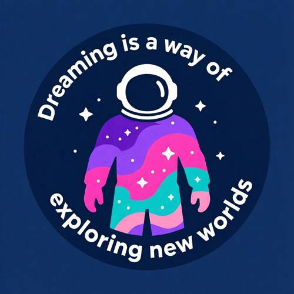
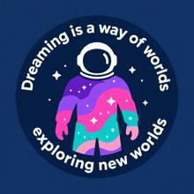
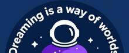
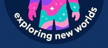
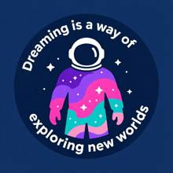
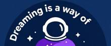

Text Generation — An astronaut made of a nebula is surrounded by the English slogan "Dre
An astronaut made of a nebula is surrounded by the English slogan "Dreaming is a way of exploring new worlds" and a flat logo design.


Judge — Direct
- PASSText Generation — The image features the English slogan 'DREAMING IS A WAY OF EXPLORING NEW WORLDS' in large, white, sans-serif capital letters at the top. The text is spelled correctly and matches the prompt's requirement exactly.
- FAILCompound - Imagination — The image depicts a figure in a standard, solid-appearing astronaut suit, including a helmet and backpack. This astronaut is positioned in front of a background of a colorful red and blue nebula. The astronaut itself is not made of the nebula but is a separate, solid entity within the nebula environment.
Judge — Continuum
- PASSText Generation — The image displays white text arranged in a circular path around a central figure. The text reads 'Dreaming is a way of exploring new worlds'. The slogan is complete, with all words present and spelled correctly.
- PASSCompound - Imagination — The image shows a figure in an astronaut's suit. The body of the suit is not a solid color but is filled with a stylized pattern of wavy bands in purple, pink, and teal, along with white star shapes and dots, representing a nebula or galaxy.
What the agent did
Thinking
Let me analyze this prompt: "An astronaut made of a nebula is surrounded by the English slogan 'Dreaming is a way of exploring new worlds' and a flat logo design." So the image should be: 1. A flat logo design style 2. An astronaut figure made of/formed from a nebula (galaxy colors, stars, cosmic clouds) 3. The English slogan "Dreaming is a way of exploring new worlds" surrounding the astronaut (likely in a circular/curved text layout typical of logos) This is a flat logo design, so I should think vector-style, clean lines, circular badge layout perhaps. The text needs to be rendered correctly — I'll need to zoom in to verify the text spelling. The text is fairly long for a logo: "Dreaming is a way of exploring new worlds". That's 8 words. In a circular badge, this could wrap around the top or all around. Text rendering is the risky part with image generators. Qwen-Image is actually quite good at text rendering compared to other models. Let me craft a good prompt: - Flat vector logo design - Circular badge/emblem layout - Astronaut silhouette filled with nebula (purple, blue, pink cosmic clouds with stars) - Curved text around the circle: "Dreaming is a way of exploring new worlds" - Clean background (dark navy or white?) For a logo with nebula colors, a dark navy background would make the nebula pop. Flat design style. Let me write the generation prompt: "Flat vector logo design, circular emblem badge on a deep navy background. At the center, an astronaut figure formed entirely of a colorful nebula — swirling purple, magenta, and teal cosmic clouds with tiny stars inside the astronaut's silhouette. Curved around the circle's edge, the English slogan 'Dreaming is a way of exploring new worlds' in clean white uppercase sans-serif lettering. Minimalist flat illustration style, crisp edges, logo design, no gradients on background, professional branding." Wait — flat logo design typically wants clean flat colors, but a nebula is inherently gradient-y. That's fine — the nebula fills the astronaut silhouette, the rest is flat. Text placement: "surrounded by" suggests the text wraps around the astronaut. Circular text is hard for models. Let me try it — Qwen is decent at curved text sometimes. Alternatively the text could arc above and below. Let me generate first. The harness controls sizes — actually, the note says "Do not set a seed. Sizes and seeds are controlled by the harness." Hmm, but sizes... The generate_image tool has width/height defaults of 1024. The note says sizes are controlled by the harness, so maybe I should just leave defaults. I'll omit width/height? Actually it says sizes are controlled by the harness — but the tool has defaults of 1024x1024. I'll just not specify size... Actually to be safe, leaving default 1024x1024 square is fine for a logo. I'll omit them (default). Let me generate: Prompt: 'Flat vector logo design: a circular emblem on a deep navy-blue background. At the center, an astronaut figure whose body is formed entirely of a glowing nebula — swirling clouds of purple, magenta, pink and teal with scattered tiny white stars inside its silhouette, white helmet visor. Wrapping around the astronaut in a circular arc, the English slogan "Dreaming is a way of exploring new worlds" written in clean white sans-serif capital letters. Flat minimal illustration, crisp vector edges, professional logo design.' Then I'll inspect, zoom into the text regions to verify spelling, and edit as needed. Let me start.
Model
I'll create this logo design. Let me start by generating the image.
Step 1 — `generate_image`
{
"prompt": "Flat vector logo design, circular emblem badge on a deep navy-blue background. At the center, an astronaut figure whose body is formed entirely of a colorful nebula \u2014 swirling clouds of purple, magenta, pink and teal with tiny white stars scattered inside its silhouette, a simple white helmet visor. Wrapping around the astronaut along the circle's edge, the English slogan \"Dreaming is a way of exploring new worlds\" written in clean white sans-serif capital letters. Flat minimal illustration style, crisp vector edges, professional logo design, clean composition.",
"model": "qwen-image"
}Result img_0

Thinking
The first generation looks quite good! Let me evaluate: 1. Flat logo design: ✓ circular badge on navy background, flat vector style 2. Astronaut made of nebula: ✓ the astronaut body is filled with purple/pink/teal nebula swirls with stars 3. Text: "Dreaming is a way of worlds exploring new worlds" — wait, let me read carefully. Top arc: "Dreaming is a way of worlds" — hmm, it looks like the top says "Dreaming is a way of worlds" and bottom says "exploring new worlds". That would be wrong — "worlds" appears twice and the order is off. Let me zoom in to verify the text. Top text appears to read "Dreaming is a way of worlds" and bottom "exploring new worlds". The correct slogan is "Dreaming is a way of exploring new worlds". Actually wait — looking again at the thumbnail: top says "Dreaming is a way of worlds" — the last word on the right side reads "worlds" but it should be "of exploring" continuing. Hmm, actually let me zoom in to read precisely. I should use inspect_region on the top text arc and the bottom text arc.
Step 2 — `inspect_region`
{
"image": "img_0",
"roi": {
"x1": 0.05,
"y1": 0.08,
"x2": 0.95,
"y2": 0.45
},
"normalized": true
}Result img_1

Step 3 — `inspect_region`
{
"image": "img_0",
"roi": {
"x1": 0.05,
"y1": 0.55,
"x2": 0.95,
"y2": 0.95
},
"normalized": true
}Result img_2

Thinking
Now I can read the text clearly: Top arc: "Dreaming is a way of worlds" Bottom arc: "exploring new worlds" The correct slogan is: "Dreaming is a way of exploring new worlds" Problem: The top arc says "of worlds" instead of just "of" — the word "worlds" got duplicated. The text as rendered reads: "Dreaming is a way of worlds exploring new worlds" which is wrong. The correct split should be: - Top: "Dreaming is a way of" - Bottom: "exploring new worlds" So I need to remove the word "worlds" from the top-right arc. The bottom arc "exploring new worlds" is correct. Let me fix with edit_image: name the incorrect string and the correct one. The instruction should be targeted: "Remove the word 'worlds' from the top-right arc of text, so the top text reads 'Dreaming is a way of' and the full slogan reads 'Dreaming is a way of exploring new worlds'." Per the benchmark policy: "For text specifically: name the incorrect string and the correct one. Do not re-describe the rest of the scene, or it will drift." So the edit prompt: 'The text on the badge is wrong. Change the text so the top arc reads "Dreaming is a way of" and the bottom arc reads "exploring new worlds" — the full slogan is "Dreaming is a way of exploring new worlds". Remove the duplicated word "worlds" at the right end of the top arc.' Hmm, but that describes a bit. Let me keep it focused: "Replace the top arc text 'Dreaming is a way of worlds' with 'Dreaming is a way of', removing the extra word 'worlds' so the full circular slogan reads 'Dreaming is a way of exploring new worlds'." That's targeted. Let me call edit_image with model qwen-image. Also the rest of the design is good — astronaut nebula body looks nice, flat logo style. Just the text fix needed. One concern: editing text may shift things. But let's try. If the edit messes it up, I can retry with a different seed.
Step 4 — `edit_image`
{
"image": "img_0",
"prompt": "Fix the text on the badge: the top arc currently reads \"Dreaming is a way of worlds\" \u2014 remove the duplicated word \"worlds\" from the top arc so it reads \"Dreaming is a way of\", and keep the bottom arc reading \"exploring new worlds\". The full slogan around the circle should be \"Dreaming is a way of exploring new worlds\". Same white sans-serif lettering, same layout.",
"model": null
}Result img_3

Thinking
The edit worked. Now the text reads: - Top arc: "Dreaming is a way of" - Bottom arc: "exploring new worlds" Full slogan: "Dreaming is a way of exploring new worlds" ✓ Let me zoom in to double check the text, letter by letter, since at full scale it can look plausible but be wrong. Let me inspect both arcs again.
Model
The edit looks successful. Let me zoom in to verify the text letter-by-letter on both arcs.
Step 5 — `inspect_region`
{
"image": "img_3",
"roi": {
"x1": 0.05,
"y1": 0.08,
"x2": 0.95,
"y2": 0.45
},
"normalized": true
}Result img_4

Step 6 — `inspect_region`
{
"image": "img_3",
"roi": {
"x1": 0.05,
"y1": 0.55,
"x2": 0.95,
"y2": 0.95
},
"normalized": true
}Result img_5
Thinking
Now let me verify the text letter by letter: Top arc: "Dreaming is a way of" — D-r-e-a-m-i-n-g ✓, i-s ✓, a ✓, w-a-y ✓, o-f ✓. Correct! Bottom arc: "exploring new worlds" — e-x-p-l-o-r-i-n-g ✓, n-e-w ✓, w-o-r-l-d-s ✓. Correct! Full slogan: "Dreaming is a way of exploring new worlds" ✓ — matches the requested string exactly. The design: - Flat logo design ✓ (circular badge, flat vector style, navy background) - Astronaut made of nebula ✓ (body filled with purple/pink/teal cosmic swirls and stars, white helmet outline) - Slogan surrounding the astronaut ✓ (wrapped in a circle around it) Everything checks out. The image matches the prompt. Time to mark best and stop.
Step 7 — `mark_best`
{
"image": "img_3",
"reason": "Flat circular logo with a nebula-filled astronaut and the slogan \"Dreaming is a way of exploring new worlds\" verified letter-by-letter, correct on both text arcs."
}Thinking
The image is complete and correct. Let me summarize for the user.
Model
The logo is complete. Here's the final design: **What it contains:** - 🧑🚀 **Astronaut made of a nebula** — the suit's silhouette is filled with swirling cosmic clouds in purple, magenta, pink, and teal, dotted with tiny stars, topped with a clean white helmet outline - ⭕ **Surrounding slogan** — the text "Dreaming is a way of exploring new worlds" wraps around the astronaut in a circular badge layout (verified letter-by-letter for correct spelling) - 🎨 **Flat logo design** — minimalist vector style, crisp edges, deep navy circular badge with small star accents The only fix needed along the way was a duplicated word in the first draft ("of worlds exploring new worlds"), which was corrected so the slogan now reads exactly as requested.